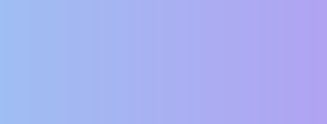

Web Designer และ Frontend Developer ทุกคน คงหนีไม่พ้น ที่จะต้องทำงานที่เกี่ยวข้องกับเรื่องของ “สี” อย่างแน่นอน ซึ่งใน CSS ก็รองรับการใช้งานสี ในรูปแบบต่าง ๆ แต่ที่นิยมที่สุดคือ RGB Color (Red, Green, Blue) ในรูป function rgb(), rgba() และ HEX notation
ในบทความนี้ ผมจะมาพูดถึงรูปแบบของสี อีกรูปแบบหนึ่ง คือ HSL Color (Hue, Saturation, Lightness) ซึ่งจะมีข้อดีข้อเสีย และช่วยให้เราทำงานง่ายขึ้นได้อย่างไรนั้น ผมจะเล่าให้ฟังครับ แต่ก่อนอื่น เรามาทำความรู้จักกับระบบสี RGB Color กันก่อนครับ
RGB Color สีจากการผสมแม่สี
ระบบสีแบบ RGB Color เป็นระบบสีที่ใช้งานได้สะดวก เพราะว่า Tool และ Library ต่าง ๆ ในงาน Programing และงาน Design มักจะใช้ระบบสี RGB Color เป็นมาตรฐานอยู่แล้ว
โดยใน CSS เราสามารถกำหนดค่าของ RGB Color ได้สองแบบคือ
RGB function –
rgb(Red, Green, Blue)ค่าของ Red, Green และ Blue จะมีค่าสูงสุด 256 ระดับ ตั้งแต่ 0 ถึง 255 เช่น- rgb(255, 0, 0)
- rgb(100, 0, 100)
- rgb(0, 0, 0)
- rgb(255, 255, 255)
Hex notation –
#RRGGBBค่าของ Red, Green และ Blue มีค่าสูงสุด 256 ระดับ ตั้งแต่ 00 ถึง FF เช่น- #ff0000
- #640064
- #000000
- #FFFFFF
การเลือกสี ให้ได้สีที่เราต้องการ
การเลือกสีในรูปแบบของ RGB Color คือการเอาสี Red, Green และ Blue ที่ค่าต่าง ๆ มาผสมกัน จนได้สีที่เราต้องการ เพื่อน ๆ อาจจะสงสัยว่า ทำไมเอาสีมาผสมกันถึงได้เป็นสีขาว ไม่กลายเป็นสีดำเหมือนการเอาสีน้ำ หรือสีโปสเตอร์ มาผสมกัน ?
นั่นก็เพราะว่า RBG Color เป็นการผสมกันของสีแสง ซึ่งมีการผสมสีแบบ Additive (บวกกัน) ก็คือยิ่งเอาสีมาบวกกัน ก็จะยิ่งกลายเป็น rgb(255, 255, 255) หรือสีขาว ให้เรามองเห็น
ซึ่งจะมีความแตกต่าง จากการผสมสีทางเคมี ที่เราคุ้นเคยในชีวิตประจำวัน เช่นงานพิมพ์ งานย้อมสี ที่เป็นการผสมแบบ Subtractive (ลบกัน) คือกระบวนการดูดซับ Spectrum สี ของแสงที่สะท้อนเข้าตาเราครับ
ข้อเสียของ RGB Color
RGB Color มีข้อเสียอยู่อย่างหนึ่งคือ เป็นระบบสีที่ใช้สำหรับคอมพิวเตอร์ แต่มนุษย์เข้าใจได้ยาก
ในงานจริงนั้น การจัดการเรื่องสี มีความสำคัญ และซับซ้อนมาก โดยเฉพาะในการทำเว็บสมัยใหม่ ที่มีการออกแบบอย่างเป็นระบบ มีการสร้าง Color Palette ใน Design Systems ที่ต้องการการดูแล ซึ่งก็มักจะประกอบด้วยสีจำนวนมาก เช่น Primary Color, Accent Color, Semantic Color หลาย ๆ แบบ และหลาย ๆ ระดับความเข้ม
 ส่วนหนึ่งของ Color Palette ใน Design Systems
ส่วนหนึ่งของ Color Palette ใน Design Systems
มนุษย์กับ “สี”
เพิ่มแดงอีก 16, เขียวอีก 20 จะได้ดูสว่างกว่านี้หน่อย…, ตรงนี้มันออกแดงไปนิด ลดสีแดงลง 30 ต้องเพิ่มน้ำเงินขึ้นอีก 16 ด้วยนะจะได้มีโทนเดิน…
อาจฟังดูไม่ค่อยคุ้นหู งั้นถ้าเป็นแบบนี้ล่ะ
- เอาสีนี้ แต่ขอสว่างกว่านี้อีกนิด
- ตรงนี้สดไปหน่อย เอาสว่างเท่านี้ลดความสดลงมาหน่อย
- เอาโทนสีประมาณนี้ แต่ลองเปลี่ยนเป็นสีแดงดู
ใช่ครับโลกความเป็นจริง เราสื่อสารกันแบบนี้ เพราะเราไม่สามารถสร้าง Mental Model การผสมสีในหัว ได้ง่าย ๆ เอาแค่ว่า #fe2315 กับ #e43152 คือสีอะไร และต่างกันอย่างไร ก็ยากแล้วใช่ไหมครับ แล้วถ้าสีใน Design Systems เราใช้เป็น RGB Color ทั้งหมด การสื่อสาร การดูแล หรือปรับเปลี่ยนอะไร จะยุ่งยากแค่ไหน
HSL Color ระบบสีที่เป็นมิตรกับมนุษย์มากกว่า
HSL Color เป็นระบบสีที่มนุษย์ เข้าใจได้ง่าย เพราะไม่ได้นิยามสีจากการผสมสี แต่เป็นระบบที่สร้างสีขึ้นมาจาก Hue (เนื้อสี), Saturation (ความอิ่ม) และ Lightness (ความสว่าง)
 HSL Color Systems
HSL Color Systems
CSS ใช้งาน HSL Color ได้ในรูป function hsl(Hue, Saturation, Lightness) เช่น
- hsl(0, 100%, 50%)
- hsl(120, 100%, 50%)
- hsl(240, 100%, 50%)
Hue
Hue คือเนื้อสี มีค่าได้ 360 ค่า ตั้งแต่ 0 ถึง 359
ทำไมถึงเป็น 360 ค่า ?
นั้นก็เพราะว่า Hue ใช้การกำหนดค่าในรูปแบบของ Color Wheel โดยแต่ละค่าของ Hue ก็คือแต่ละ Degree บน Color Wheel นั่นเอง นั่นหมายความว่า ถ้าเรากำหนดค่า Hue เป็น 0, 360 หรือ 720 ก็จะได้เนื้อสีเดียวกัน เพราะคือจุดเดียวกันบน Color Wheel ครับ
 Hue color wheel
Hue color wheel
Color Wheel ก็จะมีหน้าตาคล้าย ๆ กับการเอาสายรุ้งมาม้วนเป็นวงกลม โดยสีแดง จะอยู่ที่ 0 องศา, สีเขียว อยู่ที่ 120 องศา และสีน้ำเงินอยู่ที่ 240 องศา ใครเคยท่องสีรุ้งตอนเด็ก ๆ ก็เอามาใช้ได้เลยครับ
ม่วง น้ำเงิน คราม เขียว เหลือง แสด แดง
เราสามารถ “กะ” เนื้อสีที่เราต้องการได้ง่าย เช่น Hue ของสีน้ำเงินอมม่วง นิดนึง ก็น่าจะประมาณ 260 ถูกไหมครับ เพราะสีน้ำเงินสด คือ 240
Saturation
Saturation คือความอิ่มของสี มีหน่วยเป็นเปอร์เซ็นต์ ตั้งแต่ 0% ถึง 100% การเพิ่มลดค่า Saturation ก็เปรียบเสมือนการเพิ่มลดเนื้อสี ว่าใส่สีลงไปมากน้อยแค่ไหน โดยที่ 0% จะเหมือนว่าเราไม่ได้เจือสีลงไป ก็จะได้ผลลัพธ์เป็นสี Grayscale จืด ๆ นั่นเอง
ตัวอย่าง Saturation ค่าต่างๆ
- hsl(240, 100%, 50%)
- hsl(240, 60%, 50%)
- hsl(240, 30%, 50%)
- hsl(240, 10%, 50%)
- hsl(240, 0%, 50%)
Lightness
Lightness คือความสว่างของสี มีหน่วยเป็นเปอร์เซ็นต์ ตั้งแต่ 0% ถึง 100% การเพิ่มลด Lightness จะเหมือนการที่เราเอาสีขาว หรือสีดำ ผสมลงไปที่ Hue
ที่ 50% คือค่าตั้งต้น จะมีสีเป็นสีเทา โดยที่ค่าที่มากกว่า 50% จะมีความขาวมากขึ้น หรือที่เรียกว่า tints และค่าที่ต่ำกว่า 50% จะมีความดำมากขึ้น หรือที่เรียกว่า shades นั่นเอง
ตัวอย่าง Lightness ค่าต่าง ๆ
- hsl(240, 100%, 100%)
- hsl(240, 100%, 80%)
- hsl(240, 100%, 50%)
- hsl(240, 100%, 20%)
- hsl(240, 100%, 0%)
การใช้งาน HSL Color
ด้วย HSL Color ทำให้เราสามารถเลือกสี, คุมโทน และจัดการสีในสเกลต่าง ๆ ทั้งเล็ก และใหญ่ ได้ง่ายขึ้นมาก มาดูตัวอย่างการใช้งาน HSL Color กันครับ
คุมโทนด้วย Mono Color
เราสามารถใช้สี เพียงสีเดียว และคุมโทนสีด้วยการ ปรับ Saturation และ Lightness เพื่อให้สีโดยรวม เป็นสีเดียวกัน ที่โทนสีต่าง ๆ
 การใช้งานสีเพียง Hue เดียว
การใช้งานสีเพียง Hue เดียว
สร้าง Gradient จากสีหนึ่งไปอีกสีหนึ่ง
ไล่สีสองสีให้ดูเป็นธรรมชาติ ด้วยการปรับ Saturation และ Lightness ของทั้งสองสี ให้มีค่าเท่ากัน และ ปรับ Hue ให้ต่างกันเพียงเล็กน้อย
 การไล่สีของ hsl(220, 80%, 80%) และ hsl(250, 80%, 80%)
สร้าง Color Palette
สร้าง Color Palette ให้มีโทนเดียวกัน ไม่รู้สึกหลุดไปจากกลุ่ม ด้วยการ ปรับ Saturation และ Lightness ของทุกสีให้เท่ากัน
 Color Palette ของสี ที่มี Saturation และ Lightness เท่ากัน
Color Palette ของสี ที่มี Saturation และ Lightness เท่ากัน
เลือกสีให้ State ต่าง ๆ ของ Button
UI Element เช่น Button นั้นไม่ได้มีแค่ State เดียว แต่ยังมี State ต่าง ๆ ซ่อนอยู่ ที่อาจจำเป็นต้องใช้สี ที่มีความสว่างต่าง ๆ กัน เพื่อแสดงความแตกต่างในแต่ละ State ไม่ว่าจะเป็น สีตอนปรกติ, สีเมื่อ Hover หรือสีเมื่อ Disabled
ตัวอย่างเช่่น
- ใช้สีที่มี Hue เดียวกัน และปรับ Lightness ลงน้อย เพื่อแสดง Feedback เมื่อมีการ Hover
- ใช้สีที่มี Hue เดียวกัน และปรับ Lightness ขึ้น เพื่อแสดงสถานะ Disabled
Button ที่ State normal, hover และ disabled
จุดอ่อนของ HSL Color
HSL ในตอนนี้ ปลอดภัยอย่างมากในการใช้งาน Browser ก็รองรับทั้งหมดแล้ว
แต่การใช้งาน HSL Color มีข้อเสีย ที่น่าสนใจอยู่เล็กน้อย คือ
- แทนจำนวนสีได้น้อยกว่า – RGB Color สามารถใช้แทนจำนวนสีได้ถึง 256×256×256 = 16,777,216 สี แต่ HSL Color แทนสีได้จำนวนเพียง 360×100×100 = 3,600,000 สี
- ความคล่องตัวต่ำ – นอกจากใน CSS แล้ว Design Tool ที่นิยมในตลาดตอนนี้ ก็ยังไม่มีระบบสี HSL ให้เลือกใช้ (มี HSB แต่ว่าต้องคำนวนเพื่อแปลงค่า)
ส่งท้าย
เป็นยังไงกันบ้างครับ กับ HSL Color หวังว่าบทความนี้ จะเป็นประโยชน์ กับทั้ง Designer และ Developer นะครับ
นี่เป็นบทความแรก ที่ผมเขียนครับ ไม่รู้ว่าเขียนอ่านยากไหม แต่จะพยายามเขียนให้ดีขึ้นครับ ถ้าชอบก็ฝากแชร์ด้วยนะครับ ฮาาา พบกันใหม่โพสหน้า สวัสดีครับ